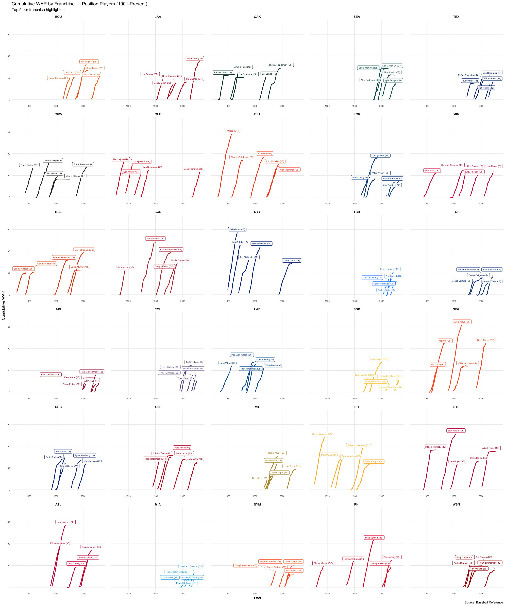

What is this? An interactive visualization of cumulative WAR (Wins Above Replacement) for each of MLB's 30 franchises. Each chart shows the top 5 players by total WAR accumulated with that specific franchise. While this visualization has minimal pure "analytical" value, I find that it provides an interesting slice of the "story" of which teams have collected powerhouse careers, and there are some interesting tidbits in looking at the outliers.
How to read it: Steeper lines = faster WAR accumulation (peak years). Flat lines = missed time or league-average play. The higher a line ends, the more value that player provided to that franchise over their tenure. The teams you'd expect have lots of steep tall lines. Obviously the newer franchises have a certain disadvantage, so you can filter by starting year for fairer comparisons.
Historical mapping: All historical team names are mapped to current franchises (e.g., Montreal Expos → Washington Nationals, Brooklyn Dodgers → LA Dodgers). Filter by expansion era to compare franchises on equal footing.
